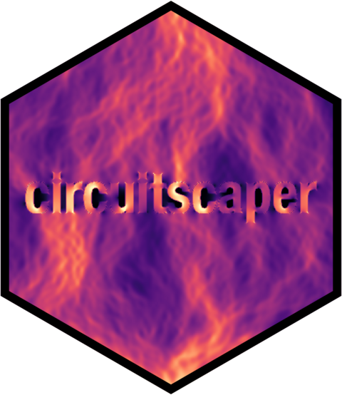

Package index
-
cs_pairwise() - Pairwise Circuitscape Analysis
-
cs_one_to_all() - One-to-All Circuitscape Analysis
-
cs_all_to_one() - All-to-One Circuitscape Analysis
-
cs_advanced() - Advanced Circuitscape Analysis
-
os_run() - Run Omniscape Moving-Window Connectivity Analysis
-
os_condition() - Define a Condition for Conditional Omniscape Connectivity
Dipole methods
circuitscaper’s own methods: pairwise and omnidirectional connectivity, and connectivity between two distributions, from superposed dipoles on one factored circuit. Experimental; see the Dipole methods article.
-
dp_circuit()experimental - Prepare a Circuit for the Dipole Methods
-
dp_omni()experimental - Omnidirectional Connectivity From Random Dipoles
-
dp_pairwise()experimental - Pairwise Connectivity Among Focal Nodes From Random Dipoles
-
dp_flux()experimental - Directional Flow Between Two Distributions
-
cs_setup() - Set Up Julia
-
cs_install_julia() - Install Julia and Required Packages
-
cs_julia_available() - Check if Julia and Required Packages Are Available